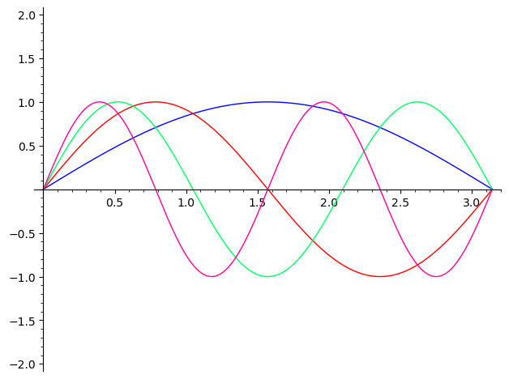

Discuss the figure above. Does it make sense how the peaks and valleys of the sine wave correspond to the beats in a given time interval?
Section 3.5 Harmonics
We are now able to develop our first applications of number theory to music theory, specifically the theory of harmonics and temperament. For a detailed treatment of mathematical aspects of music, including the way that the physiology of the ear influences perception of music, see David Benson’s 2008 book Music: A Mathematical Offering.
Sound waves occur as sequences of high and low pressure moving through air, i.e., as an oscillation of pressure. Sound is perceived through our ears as a sequence of "beats" of pressure. The number of beats that is heard per second is the frequency of the wave, which is measured in Hertz. One Hertz, written as \(1\) Hz, is equal to one beat per second. The human ear can perceive frequencies ranging from around 20 Hz to around 20,000 Hz.
An aside for those students who have musical experience: In this class, we will use the term "frequency" rather than "pitch", because they are technically different; pitch is the human perception of frequency, which does not always correspond accurately to the physical frequency. However, for typical musical purposes, the words pitch and frequency are used as synonyms.
We can experience "pure" sound waves using a tone generator, such as
https://onlinesound.net/oscillator-modulator. Let’s experiment listening to the following frequencies:-
1 Hz using a square wave (this is 1 beat per second), then increase to 440 Hz (which is a concert "A" pitch).
-
20 Hz using a sine wave (this is a smoothly-varying pressure wave with 20 pressure beats per second), then increase to 880 Hz.
A natural way to think about sound waves is as a sequence of beats, or pulses of pressure. When those beats are synchronized in some way, they are aligned. For example, consider the sound of two simultaneous sine waves, one at 220 Hz and one at 440 Hz, using
https://onlinesound.net/oscillator-modulator. What is happening is that we hear 220 beats per second from one wave, and 440 beats per second from another. Thus, these are impacting our ear in a synchronized manner.
Next, listen to what happens when we add another wave at 660 Hz, which is three times the original wave in frequency. This is the sound of three simultaneous sound waves, where the lowest has frequency \(f=220\) Hz, and the other two have frequencies \(2f=440\) and \(3f=660\text{.}\)
We typically represent the sequence of beats as a sine wave. For example, the following figure shows four frequencies which are a fundamental frequency \(f\) with a single peak, along with the sine waves corresponding to \(2f\text{,}\) \(3f\text{,}\) and \(4f\text{.}\)

Checkpoint 3.5.2.
What happens when we cut out the original frequency, and only play the frequencies for \(2f\) and \(3f\text{?}\) It sounds different, because the ratio of beats per second is different between \(2f\) and \(3f\) than between \(f\) and \(2f\text{.}\) Specifically, when we listen to \(f\) and \(2f\text{,}\) then we are hearing 2 beats of the second frequency for each beat of the first frequency, giving a ratio of \(2:1\text{.}\) However, when we listen to \(2f\) and \(3f\text{,}\) then we are hearing 3 beats of the third frequency for every 2 beats of the second frequency, giving a ratio of \(3:2\text{.}\) This leads us to a fundamental observation: when considering a pair of frequencies, what matters for our perception of their interaction is the ratio of their frequencies.
Checkpoint 3.5.3.
Discuss the following concepts with your group. What questions do you have about them?
-
Sound as sequences of "beats" of pressure in the air being sensed by our ears
-
Hertz as beats per second
-
Using the ratio between two frequencies to measure how those frequencies are related.
We are now in a position to give precise mathematical definitions for some musical terms.
Definition 3.5.4.
-
Given two frequencies \(f_1\) Hz and \(f_2\) Hz, the interval from \(f_1\) to \(f_2\) is given by the ratio \(f_1:f_2\text{.}\) If two ratios are equivalent as real numbers, then we say that they define the same interval.
-
Two frequencies differ by an octave if their interval is \(2:1\text{.}\)
-
Two frequencies differ by a perfect fifth if their interval is \(3:2\text{.}\)
-
Two frequencies differ by a perfect fourth if their interval is \(4:3\text{.}\)
-
Two frequencies are said to produce equivalent notes if they differ by some number of octaves, i.e., \(f\) and \(g\) are equivalent notes if \(f=2^ng\) for some integer \(n\text{.}\)
-
A scale is any sequence of notes starting at a root frequency \(f\) and ending at the octave \(2f\text{.}\)
Checkpoint 3.5.5.
-
What frequency is two octaves above 236 Hz?
-
What frequency is one fifth above 440 Hz?
-
What frequency is three fifths above 220 Hz?
-
Suppose that the frequency \(g\) is a fourth above a frequency \(f\text{.}\) Show that the fifth above \(g\) is \(2f\text{,}\) the octave above \(f\text{.}\)
-
What frequency is one octave above the fifth above 440 Hz?
-
Show that the frequency \(\frac{9}{8}f\) is obtained by going up by two fifths from the frequency \(f\) followed by going down by one octave from the resulting frequency.
-
Are the frequencies 440 Hz and 1740 Hz equivalent notes?
One thing that is important to know about musical sound is that when a string vibrates, it propagates sound waves at more than one frequency. In addition to the fundamental frequency \(f\) that it generates, the vibrating string also generates the frequencies \(2f\text{,}\) \(3f\text{,}\) \(4f\text{,}\) and so on. These additional sound waves are called the harmonics of the fundamental frequency. The harmonics are produced with varying amplitudes (i.e., loudness) depending on how the string was struck/activated/excited/etc. Thus, we are led to the following principle.
Principle 3.5.6.
If a vibrating string has fundamental frequency \(f\text{,}\) then it also produces harmonics of frequencies \(2f\text{,}\) \(3f\text{,}\) \(4f\text{,}\) and so on. Thus, the intervals that are heard when a string vibrates include the following intervals between consecutive harmonics:
Intervals, fifths, and fourths therefore are important harmonics that arise naturally in the sound produced by vibrating strings. As a result, these intervals play a fundamental role in many musical traditions around the world.